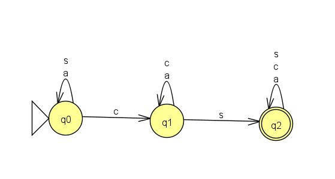
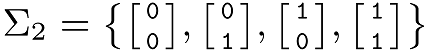

Homework 1
Last updated: Fri, 28 Jan 2022 20:11:25 -0500
Out: Mon Jan 31, 00:00 EST Due: Sun Feb 06, 23:59 EST
This assignment explores deterministic finite automata (DFAs).
Homework Problems
DFA Formal Description (5 + 5 = 10 points)
Create a DFA (5 points)
DFAs Can Do "Computation"! (5 points)
README (1 point)
Total: 21 points
Submitting
Submit your solution to this assignment in Gradescope hw1. Please assign each page to the correct problem and make sure your solutions are legible.
A submission must also include a README containing the required information.
1 DFA Formal Description
Imagine you want to search for CS courses in a course catalog.
The following DFA represents a program that could help you with this.
It accepts all strings containing the substring cs.

Come up with a formal description for this DFA.
Recall that a DFA’s formal description has five components, e.g. M = (Q,\Sigma,\delta,q_0,F).
You may assume that the alphabet contains only the symbols from the diagram.
- Then do the following computations using extended transition function and say whether computation represents an accepting computation (some of these may be tricky so be careful here, you may want to review the definition of an accepting computation):
\hat{\delta}(q0,\varepsilon)
\hat{\delta}(q0,\texttt{a})
\hat{\delta}(q1,\texttt{ca})
\hat{\delta}(q2,\texttt{acs})
\hat{\delta}(q0,\texttt{acs})
2 Create a DFA
Prove that the following language is regular:
L = \{w\mid w\textrm{ starts with the character }\texttt{a}\textrm{ and ends with the character }\texttt{z}\}
In other words, design a DFA that recognizes the language L. Your answer must be a formal description of the machine.
You may assume that strings in the language are drawn from alphabet \{\texttt{a,b,y,z}\}.
3 DFAs Can Do "Computation"!
Here is an example demonstrating that DFAs can also do "real" computation.
Assume that the following is an alphabet of "domino" symbols:

Now let GT be a language consisting of sequences of these dominos where: GT = \{w\mid w\textrm{{}’s top row} < w\textrm{{}’s bottom row (each row represents a binary number)}\}
Prove that GT is a regular language.